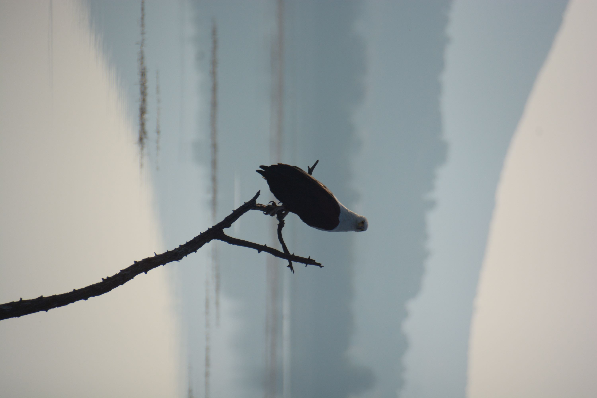
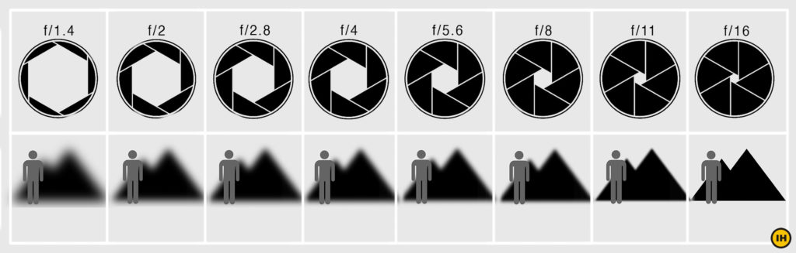

|  |
Photography is more than just simply clicking a button, it is an art form. It serves as a way for people to express them selves and to be creative. Each photograph tells a unique story through composition, lighting and subject matter. Photography can change the way an individual sees the world around them. Photography encourages creativity. It allows people to capture their unique experiences interpritations of the world. By exploring composition, lighting, and perspective, photographers learn to observe details that often go unnoticed, enhancing their appreciation for everyday moments. This artistic expression not only boosts self-confidence but also allows for personal storytelling, giving individuals a unique way to communicate their experiences and emotions. As they experiment with different techniques and styles, photographers continually challenge themselves, sparking innovation and expanding their creative boundaries. Photography also helps to deepen an individual's connection to nature and wildlife, while encouraging exploration and mindfulness. When photographers venture outdoors to capture the beauty of nature and wildlife they are able to connect with it on a deeper level. It creates a deeper appreciation for the environment, photographers often seek to document and protect the beauty that they encounter. Photography contributes to an individual’s mental well-being by encouraging mindfulness and self-expression. It allows individuals to immerse themselves in the present moment, which in turn helps to decrease stress levels, by focusing on framing, subject matter and lighting. Through exploring new environments and experimenting with different techniques a deeper connection to one’s surroundings is formed, helping to boost overall mental health.
You do not need the most expensive or fancy camera to take good photos. What you need is to understand the key concepts of photography |
|---|
Aperture can be defined as the opening in a lens through which light passes to enter the camera. The way I like to think about it is it helps to control the focal point. The higher your apeture, the more of the foreground will be in focus and the lower your apeture, the more of the background will be in focus.
Imagine you are standing in front of a patch of flowers, with a dog behind them and a mountain range behind the dog
|
Apeture setting |
What is in focus |
|---|---|
|
Between F/1.4 and F/2.8 When the lense has a large opening |
The flowers will be more in focus |
|
Between F/2.8 and F/5.6 When the lense has a medium opening |
The dog and flowers will be more in focus |
|
Between F/8.0 and F/16 When the lense has a small opening |
The dog and the mountains will be more in focus |
ISO controls the amount of light your camera lets in, and therefore how dark or light your photos will be. Here are some top tips to help calculate correct exposure: Low values, such as ISO 100, are best for a sunny outdoor shoot. For shooting at night use an ISO of 1600 or higher.
A higher number indicates a higher sensitivity and a greater ability to capture light